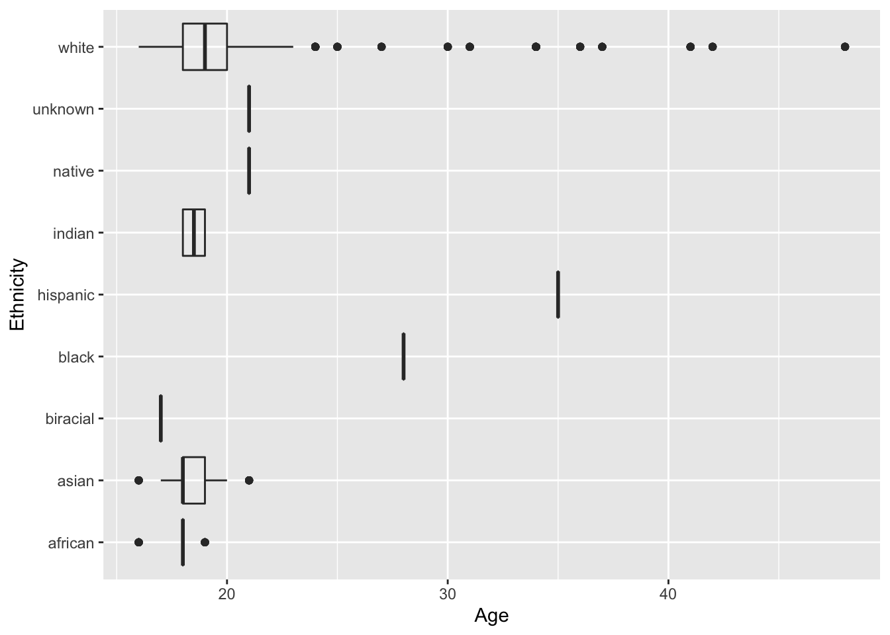
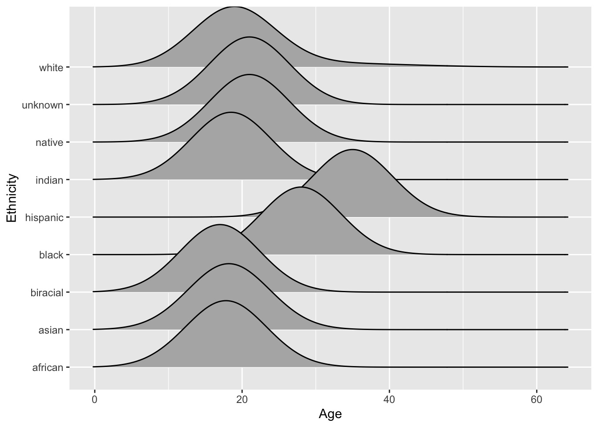

library(tidyverse)Lab3: Hip-Hop
Part 1, Instructions
Declaring Libraries
Importing Data Set
hiphop <- read_csv(here::here("supporting_artifacts", "Lab3", "hiphop.csv"))Part 3, Assignment
1.
REFELCTION:
Upon looking back on this question, it made me realize that I did not answer essential parts about the data we were in question about. This is of course important when later analyzing it, to be able to get the bigger picture and what potential outcomes could be. I now know for the future to also take into account participants coding and how it could vary across data sets.
summary(hiphop)his study takes a deeper look at African-American English (AAE) with asking students from the University of Minnesota familiarity of different vocabulary words. All the data seems to be in either characters, or numbers. There also seems to be some people in the study where key columns are not recorded for, like city being 0. There is overall 10752 rows and 38 variables in total. The participants were selected from undergraduate linguistics, sociology, and music classes and contains 168 participants. The participants were coded as “p” following by their respective participant number, overall being a character string.
2.
hiphop |>
count(word, subj) |>
nrow()[1] 10752There are 10752 rows in this data set. This is due to there being 168 people and 64 words. so for each word, 168 people (or rows) will be answering it.
3.
REFELCTION:
Upon looking back on this question, it made me more away to take a glance at the meta data about the lab. I think after reflecting on this it overall allowed me to better understand the data set that was in use and as a result better understand the data analytics-techniques that we used here. I will now continue to inspect the data before I use it in the future.
hiphop |>
filter(city == 0, county == 0)# A tibble: 384 × 38
word subj sex age ethnic city county intl vocal class…¹ folk rock
<chr> <chr> <chr> <dbl> <chr> <dbl> <dbl> <dbl> <dbl> <dbl> <dbl> <dbl>
1 [to be… p145 Male 18 white 0 0 0 0 0 0 15
2 [to be… p147 Fema… 20 asian 0 0 0 0 4 0 0
3 [to be… p11 Fema… 18 asian 0 0 15 0 0 0 0
4 [to be… p43 Fema… 18 asian 0 0 6 0 0 0 0
5 [to be… p135 Fema… 18 asian 0 0 0 0 3 0 0
6 [to be… p81 Fema… 18 asian 0 0 0 0 2 0 0
7 5-0 p145 Male 18 white 0 0 0 0 0 0 15
8 5-0 p147 Fema… 20 asian 0 0 0 0 4 0 0
9 5-0 p11 Fema… 18 asian 0 0 15 0 0 0 0
10 5-0 p43 Fema… 18 asian 0 0 6 0 0 0 0
# … with 374 more rows, 26 more variables: country <dbl>, pop <dbl>,
# alternative <dbl>, hiphop <dbl>, unclassifiable <dbl>, countyBlack <dbl>,
# jayz <dbl>, barkley <dbl>, boondocks <dbl>, monique <dbl>, bieber <dbl>,
# asianMove <dbl>, blackMove <dbl>, hispanicMove <dbl>, nativeMove <dbl>,
# SAAMEMove <dbl>, whiteMove <dbl>, blackWeekly <dbl>, jayz1 <dbl>,
# boondocks1 <dbl>, familiarity <dbl>, trial <dbl>, fam1 <dbl>,
# popularityScore <dbl>, numPreferredArtists <dbl>, …It seems like for some of the variables were replaced with 0 instead of NA values, such as some subjects data in city and county. This could be beneficial because they would still represent specific points in the data set, without potentially needing to remove them. A drawback however is that when using summary statistics they would be accounted for instead which might drop down the mean/median without knowing it would do so. Another way they replaced missing values for SAAMEMove and BlackWeekly would be instead of 0 they just had the mean value (0.2948718). This as a result could be beneficial because it is representative of the sample population instead of 0. However this would not be helpful when calculating further summary statistics for one of these two categories because the mean or median could be biased.
4.
REFELCTION:
This question made me more aware of the functionality of the across function. Initially, I tended to stray away from using the across() function because I didn’t understand the syntax too well. However, after I now understand how to use it and will in future labs.
#Clean the data set
hiphopclean <- hiphop |>
mutate(across(c(sex, ethnic, jayz1, fam1, boondocks1), .fns = as.factor
)) |>
filter(city != 0,
county != 0,
countyBlack != 0
)5.
hiphop |>
distinct(word) |>
nrow()[1] 64There are 64 unique AAE words that were studied in this data set.
6.
hiphopclean <- hiphopclean |>
mutate(ethnic1 = if_else(ethnic == 'white', 'white', 'non-white'),
ethnic1 = as.factor(ethnic1)
)7.
hiphopclean |>
distinct(subj, age, ethnic, sex) |>
summary() subj sex age ethnic
Length:159 Female:109 Min. :16.00 white :133
Class :character Male : 50 1st Qu.:18.00 asian : 14
Mode :character Median :19.00 african : 5
Mean :20.12 indian : 2
3rd Qu.:20.00 biracial: 1
Max. :48.00 black : 1
(Other) : 3 In this data set, there seems to be an age range between 16 and 48 with the median being 19 (Overall predictable for a study done in a college class). For ethnicity, there seems to be a majority white with 133 students, followed by asian with 14 students. For sex, the class seems to be predominately female with 109 students, followed by male with 50. This also takes into account the clean data set.
8.
REFELCTION GRAPH 1:
Upon looking back on this question, it made me understand to give a deeper look into my graphs after I run them, not just simply code it and render it later. I think initially I just ran it but didn’t see the labels and notice the mistake. I know now for the future to pay more attention to the x and y axis labels
REFELCTION GRAPH 2:
Upon looking back on this question, and changing my graph, it allowed me to look into more graphs that could help me visualize any data. This was even more helpful because it allowed me to go back to the challenge problem and see how I could incorporate it into this set as well. I hopefully will be continuing to use these graphs in the future.
library(ggridges)
hiphopclean |> ggplot(data = hiphopclean,
mapping = aes(x = age,
y = ethnic,
)) +
geom_boxplot(alpha = 0.1) +
labs(x = "Age", y = "Ethnicity")
hiphopclean |> ggplot(mapping = aes(x = age,
y = ethnic,
)) +
geom_density_ridges(width = 0.5, panel_scaling = FALSE) +
labs(x = "Age",
y = "Ethnicity")Warning: Ignoring unknown parameters: widthPicking joint bandwidth of 5.4
FAMILIAR WORDS
People below the age of 20
Max: 5-0, feel me, hella, off the hook
REFELCTION:
In this question I removed the arrange() that I initially put. I now know for the future to only input the code into questions that you ask about. I think initially when I was doing the lab, I just added it to visualize the arrange function better. However, I should have taken it out before I rendered the document. I have removed it for the other questions as well.
hiphopclean |>
filter(age > 20) |>
group_by(word) |>
summarize(fammed = median(familiarity)) |>
slice_max(fammed)# A tibble: 4 × 2
word fammed
<chr> <dbl>
1 5-0 5
2 feel me 5
3 hella 5
4 off the hook 5Min: ghost, A-town, ay yo trip, beezy, bones, boughie, break someone out, chedda, cheese
hiphopclean |>
filter(age > 20) |>
group_by(word) |>
summarize(fammed = median(familiarity)) |>
slice_min(fammed)# A tibble: 56 × 2
word fammed
<chr> <dbl>
1 [to be] ghost 1
2 A-town 1
3 ay yo trip 1
4 beezy 1
5 bones 1
6 boughie 1
7 break someone out 1
8 catch the vapors 1
9 chedda 1
10 cheese 1
# … with 46 more rowsNon-white women
Max: A-town, boo, feel me, finna, off the hook, what it do
hiphopclean |>
filter(sex == 'Female',
ethnic1 == 'non-white') |>
group_by(word) |>
summarize(fammed = median(familiarity)) |>
slice_max(fammed)# A tibble: 6 × 2
word fammed
<chr> <dbl>
1 A-town 5
2 boo 5
3 feel me 5
4 finna 5
5 off the hook 5
6 what it do 5Min: ghost, 5-0, ay yo trip, beezy, bones, boughie, break someone out, catch the vapors, chedda, cheese
hiphopclean |>
filter(sex == 'Female',
ethnic1 == 'non-white') |>
group_by(word) |>
summarize(fammed = median(familiarity)) |>
slice_min(fammed)# A tibble: 49 × 2
word fammed
<chr> <dbl>
1 [to be] ghost 1
2 5-0 1
3 ay yo trip 1
4 beezy 1
5 bones 1
6 boughie 1
7 break someone out 1
8 catch the vapors 1
9 chedda 1
10 cheese 1
# … with 39 more rowsWhite men above the age of 30
Max: 5-0, A-town, feel me, hard, off the hook
hiphopclean |>
filter(sex == 'Male',
ethnic1 == 'white',
age > 30) |>
group_by(word) |>
summarize(fammed = median(familiarity)) |>
slice_max(fammed)# A tibble: 5 × 2
word fammed
<chr> <dbl>
1 5-0 5
2 A-town 5
3 feel me 5
4 hard 5
5 off the hook 5Min: ashy, ay yo trip, beezy, bones, boo, boughie, break someone out, catch the vapors, chedda, cheese
hiphopclean |>
filter(sex == 'Male',
ethnic1 == 'white',
age > 30) |>
group_by(word) |>
summarize(fammed = median(familiarity)) |>
slice_min(fammed)# A tibble: 52 × 2
word fammed
<chr> <dbl>
1 ashy 1
2 ay yo trip 1
3 beezy 1
4 bones 1
5 boo 1
6 boughie 1
7 break someone out 1
8 catch the vapors 1
9 chedda 1
10 cheese 1
# … with 42 more rowsFINDING BIEBER:
a white male, from a relatively small town (10,000-60,000 people) in Ontario would have been 17-23 at the time of the study.
REFELCTION
Initially when I was doing this question, I did not understand the point of the group by and thought it had an effect if you used it at the end of the last pipe. I now know more about the relationship between group_by’s and summarize() and will continue to intertwine them in the future.
hiphopclean |>
filter(sex == 'Male',
ethnic == 'white',
age >= 17,
age <= 23,
city >= 10000,
city <= 60000,
bieber >= 5) |>
group_by(subj) |>
summarize() # A tibble: 1 × 1
subj
<chr>
1 p17 I would assume that Justin Bieber would be person 17. adjusting for the factors above, and using the bieber variable to get the most Bieber listener, the person who stood out was p17. However, it is odd he did not know all his songs and get a score 6.